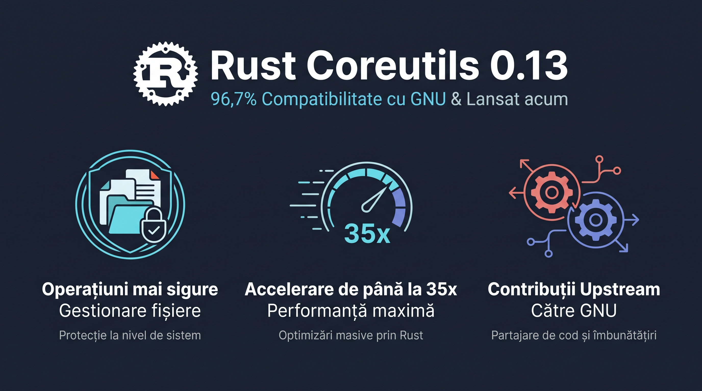

Rust Coreutils 0.13 atinge 96,7% compatibilitate cu GNU: Operațiuni mai sigure cu fișiere, accelerare de până la 35x și contribuții upstream către GNU

Proiectul uutils a lansat Rust Coreutils 0.13, cea mai nouă versiune a alternativei scrise în Rust la suita clasică GNU Coreutils (colecția de utilitare esențiale în linie de comandă prezente pe aproape orice sistem Linux). Actualizarea aduce compatibilitate sporită pentru scripturile shell existente, protecții suplimentare la manipularea fișierelor și optimizări semnificative de viteză.
1. Progresul testelor de compatibilitate GNU (96,7%)
Rata de promovare: Rust Coreutils trece acum 684 din cele 707 teste de compatibilitate GNU rulate, atingând o rată de succes de 96,7% (cu 31 de teste promovate în plus față de versiunea 0.12, în condițiile în care suita a fost extinsă cu 26 de teste noi; rămân 23 de teste picate și zero erori).
Corecții de comportament în utilitare cheie:
sort: gestionează opțiunile conflictuale într-un mod mai fidel implementării GNU;date: îmbunătățește formatarea datelor, inclusiv formatele specifice setărilor regionale (locale) și fracțiunile de secundă;dd: primește remedieri pentru conversiile de date și anumite condiții de ieșire;lsșitail:lscalculează mai precis formatarea timpului și sortarea bazată pe versiuni, iartailurmărește corect legăturile simbolice (symlinks) către țintele lor;Alte utilitare aliniate la GNU includ
printf,seq,split,statșinumfmt.
2. Siguranța operațiunilor cu fișiere și directoare
O atenție deosebită a fost acordată prevenirii comportamentelor periculoase în scripturile automatizate:
Protecție la legături simbolice (
cp,mv,ln): Comandacpnu mai permite copierea recursivă printr-o legătură simbolică aflată la destinație, iarmvșilnblochează anumite operațiuni care ar înlocui directoare existente cu legături simbolice.Parcurgere recursivă securizată (
chmod,chown,chgrp): Aceste utilitare îmbunătățesc parcurgerea recursivă a directoarelor și verificările de protecție a directorului rădăcină (root preservation checks).
3. Optimizări de performanță și contribuții către GNU Coreutils
Creșteri majore de viteză:
basenc: operațiunile de codare și decodare Base58 sunt acum de aproximativ 35 de ori mai rapide;cut: performanță îmbunătățită cu 23%;date: execuție cu 22% mai rapidă;join: creștere a vitezei cu 20%;trșiod:trprocesează mai eficient ștergerea octeților, iarodtransmite rezultatele linie cu linie (streaming) în loc să le rețină în buffer.
82 de commit-uri upstream către GNU: Eforturile de aliniere au adus beneficii directe și proiectului original GNU Coreutils — în acest ciclu de dezvoltare, contribuitorii uutils au trimis 82 de commit-uri upstream, adăugând în principal teste pentru cazuri limită neacoperite anterior, alături de remedieri pentru
tailșifmt.